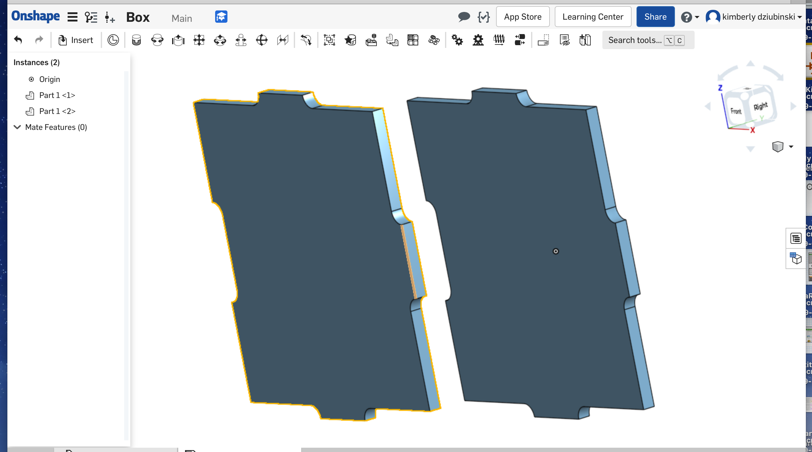
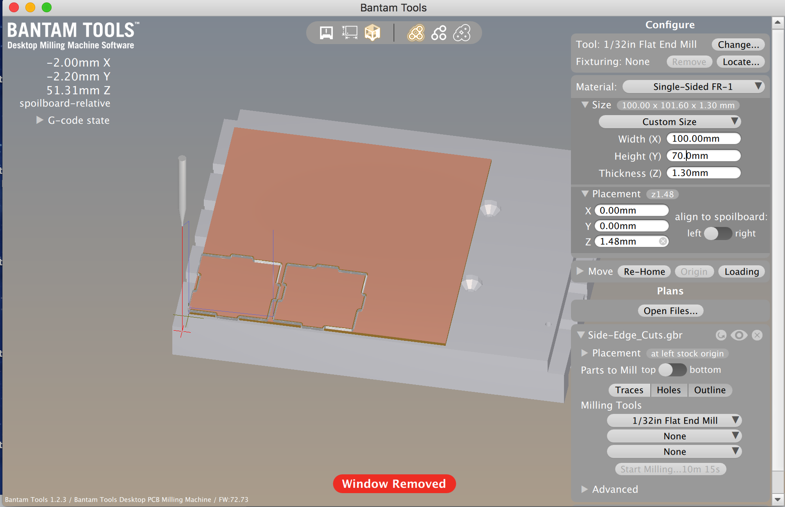
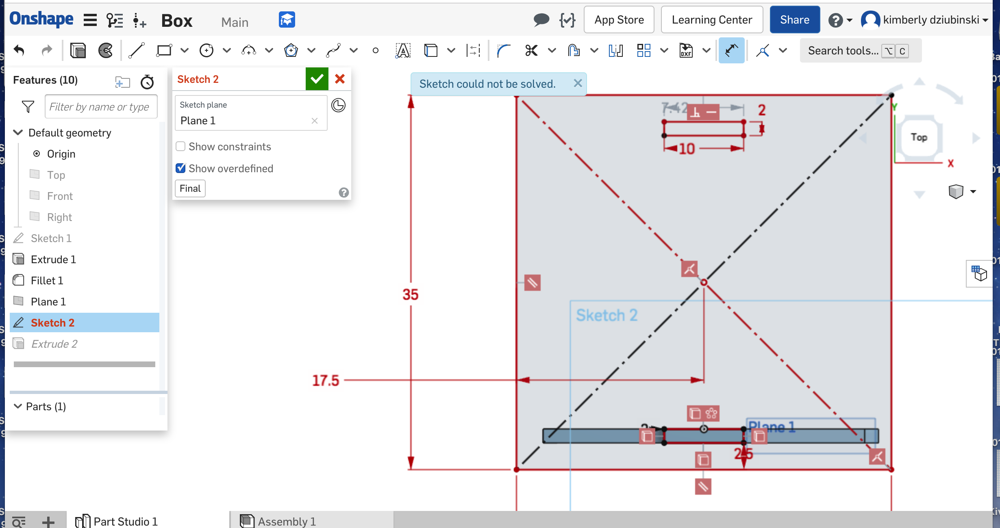
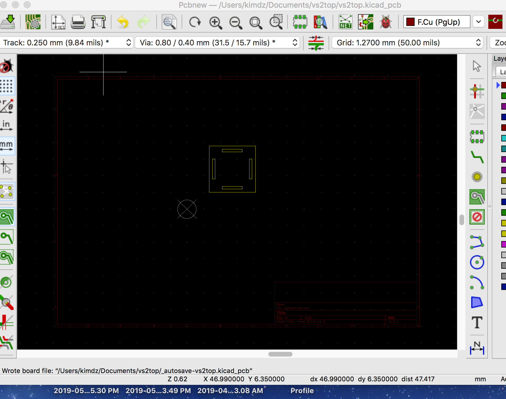
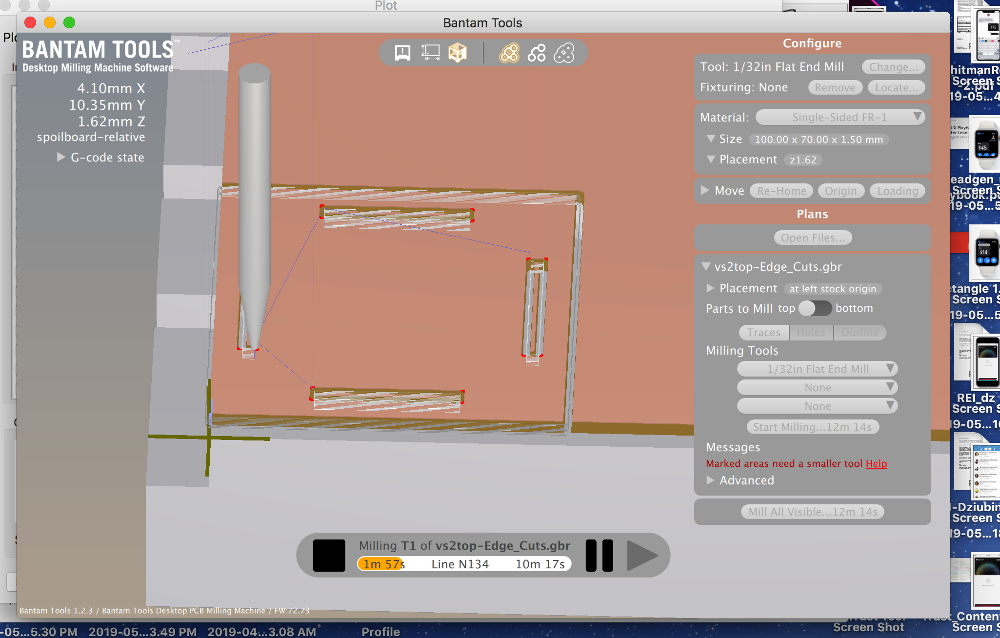

MilledBox
OnShape File
I
Cindy Feng and I discussed together to form a concept and began to build in Onshape.
I liked collaborating this way because being an engineer, she challenged my thinking for ways
to construct a box assembly—as well as how to implement the idea in OnShape.

From OnShape I exported as a DXF > opened in Kikad > opened in Bantam. Everything looked BTDwgCreate
as it appeared in Bantam. WRONG.

Setting up for milling went smoothly however not entirely successful. While it cut through the edges were
"crusty" as a result of not a clean cut all the way through the copper.

Cindy who was working ahead of my pace had milled the top/bottom design, and informed we the slots were too small,
and gave me a suggestion for what size the slots should be instead.

A Kikad view of my box/top originally made in OnShape

Bantam view of my top/bottom milling.
At this point my project falls apart,literally—and I got kicked out of The Mill (closing time.) While the slots cut cleanly,
they were much to big. And the milling was not successful in that perimeter edge was crusty and cracking apart.
REFLECTING BACK: I would begin with a different design plan. I'd use AI which I use frequently.
SHOUT OUT—THANK YOU FOR YOUR HELP
Cindy Feng !! who showed me new ways to construct in OnShape, and Leo who helped me think through settings for milling.